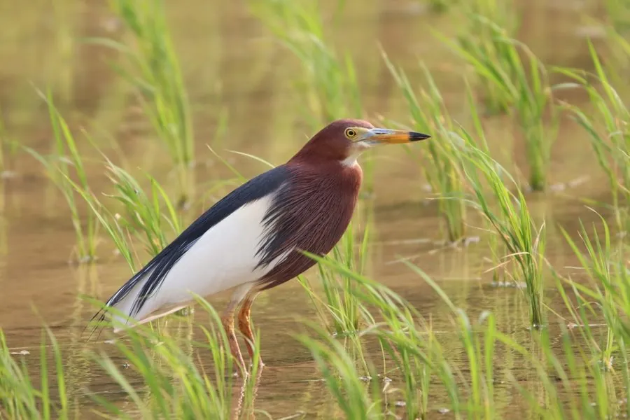

鸟类 · 动物界
池鹭 Ardeola bacchus

中国南方常见的涉禽，繁殖期头颈栗红、背部蓝黑，常在水田和池塘边静静等待鱼虾，受惊时迅速起飞。
- 分类
- 门脊索动物门纲鸟纲目鹈形目科鹭科属池鹭属
- 栖息环境
- 水田、池塘、沼泽、河滩与稻田等浅水湿地
- 地理分布
- 中国南方、东南亚和日本，北方种群冬季南迁
- 保护级别
- IUCN 无危（LC）；中国“三有”保护动物
物种志
池鹭体长 42–52 cm，体重 250–350 g。非繁殖期全身呈褐色纵纹，外形低调；繁殖期羽色变得鲜明，头顶和颈部呈栗红色，背部蓝黑色并带金属光泽，翅膀白色，飞行时白翅与深色背部对比明显。它的喙黄色而尖端黑色，腿橙黄色。
池鹭繁殖于中国南方、东南亚和日本，北方种群冬季南迁。它们栖息在水田、池塘、沼泽、河滩和稻田，常单只或小群在水边静静等待，捕食小鱼、虾、蛙类和昆虫。繁殖期在树上或竹林中集群营巢，每窝产卵 3–5 枚，孵化 20–22 天。池鹭是中国南方水乡常见的涉禽，目前被列为无危物种，中国将其列入“三有”保护名录。
形态与习性
- 食性小鱼、虾、蛙类和昆虫
- 体长42–52 cm
- 体重250–350 g
- 繁殖每窝 3–5 枚卵，孵化 20–22 天
- 羽色繁殖期头颈栗红、背部蓝黑，非繁殖期褐色纵纹
- 寿命野外约 8–10 年
趣味知识
- 池鹭繁殖期头颈呈栗红色、背部蓝黑，与平时低调的羽色差别很大。
- 它常在水田边一动不动地等待，发现鱼虾后迅速伸喙捕捉。
- 池鹭喜欢在树上或竹林中集群营巢，一片林子可聚集很多巢。